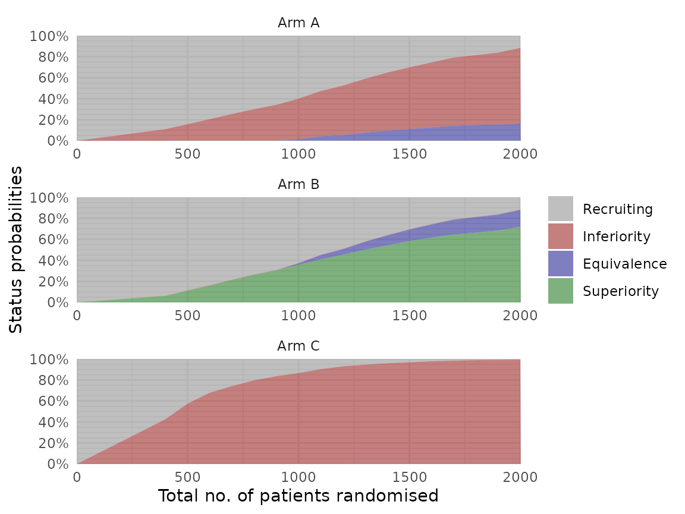

The adaptr package simulates adaptive (multi-arm,
multi-stage) clinical trials using adaptive stopping, adaptive arm
dropping and/or response-adaptive randomisation.
The package has been developed as part of the INCEPT (Intensive Care Platform Trial) project, funded primarily by a grant from Sygeforsikringen “danmark”.
Additional guidance on the key methodological considerations when planning and comparing adaptive clinical trials can be found in the open access article “An overview of methodological considerations regarding adaptive stopping, arm dropping and randomisation in clinical trials” available in Journal of Clinical Epidemiology.
Basic example
First, load the package:
library(adaptr)
#> Loading 'adaptr' package v1.3.0.
#> For instructions, type 'help("adaptr")'
#> or see https://inceptdk.github.io/adaptr/.Parallelisation is supported in many adaptr functions,
and a cluster of parallel workers may be setup for the entire session
using setup_cluster(), which is ideally called early in a
script. Alternatively, parallelisation can be controlled by the global
"mc.cores" option (set by calling
options(mc.cores = <number>)) or the
cores argument of many functions.
Set up trial
Then, setup a trial with the desired specifications.
adaptr offers the general purpose function
setup_trial(), but here we use the built-in
setup_trial_binom() for a trial with a binary, binomially
distributed, undesirable outcome such as mortality (adaptr
also includes setup_trial_norm() for continuous, normally
distributed outcomes).
The example trial specification has the following characteristics:
- The allocation probability to each arm cannot be lower than 15%
(
min_probs). - Default thresholds for
inferiority(< 1% probability of being the best arm) andsuperiority(> 99% probability of being the best arm) are used and hence not specified. - Equivalence stopping rule: if the simulation yields a 90%
probability (
equivalence_prob) of treatment differences being < 5 %-points (equivalence_diff), the trial is stopped. - We soften allocation ratios (
soften_power) by a constant factor.
binom_trial <- setup_trial_binom(
arms = c("Arm A", "Arm B", "Arm C"),
true_ys = c(0.25, 0.20, 0.30),
min_probs = rep(0.15, 3),
data_looks = seq(from = 300, to = 2000, by = 100),
equivalence_prob = 0.9,
equivalence_diff = 0.05,
soften_power = 0.5
) See ?setup_trial() for more details on the arguments or
vignette("Basic-examples", "adaptr") for
basic example trial specifications and a thorough
review of the general trial specification settings, and
vignette("Advanced-example", "adaptr") for an
advanced example including details on how to specify
user-written functions for generating outcomes and posterior draws.
We can print an overview of the trial specification by simply running:
binom_trial
#> Trial specification: generic binomially distributed outcome trial
#> * Undesirable outcome
#> * No common control arm
#> * Best arm: Arm B
#>
#> Arms, true outcomes, starting allocation probabilities
#> and allocation probability limits:
#> arms true_ys start_probs fixed_probs min_probs max_probs
#> Arm A 0.25 0.333 NA 0.15 NA
#> Arm B 0.20 0.333 NA 0.15 NA
#> Arm C 0.30 0.333 NA 0.15 NA
#>
#> Maximum sample size: 2000
#> Maximum number of data looks: 18
#> Planned data looks after: 300, 400, 500, 600, 700, 800, 900, 1000, 1100, 1200, 1300, 1400, 1500, 1600, 1700, 1800, 1900, 2000 patients have reached follow-up
#> Number of patients randomised at each look: 300, 400, 500, 600, 700, 800, 900, 1000, 1100, 1200, 1300, 1400, 1500, 1600, 1700, 1800, 1900, 2000
#>
#> Superiority threshold: 0.99 (all analyses)
#> Inferiority threshold: 0.01 (all analyses)
#> Equivalence threshold: 0.9 (all analyses) (no common control)
#> Absolute equivalence difference: 0.05
#> No futility threshold (not relevant - no common control)
#> Soften power for all analyses: 0.5By default, (most) probabilities are shown with 3 decimals. This can
be changed by explicitly print()ing the specification with
the prob_digits arguments, for example:
print(binom_trial, prob_digits = 2)
#> Trial specification: generic binomially distributed outcome trial
#> * Undesirable outcome
#> * No common control arm
#> * Best arm: Arm B
#>
#> Arms, true outcomes, starting allocation probabilities
#> and allocation probability limits:
#> arms true_ys start_probs fixed_probs min_probs max_probs
#> Arm A 0.25 0.33 NA 0.15 NA
#> Arm B 0.20 0.33 NA 0.15 NA
#> Arm C 0.30 0.33 NA 0.15 NA
#>
#> Maximum sample size: 2000
#> Maximum number of data looks: 18
#> Planned data looks after: 300, 400, 500, 600, 700, 800, 900, 1000, 1100, 1200, 1300, 1400, 1500, 1600, 1700, 1800, 1900, 2000 patients have reached follow-up
#> Number of patients randomised at each look: 300, 400, 500, 600, 700, 800, 900, 1000, 1100, 1200, 1300, 1400, 1500, 1600, 1700, 1800, 1900, 2000
#>
#> Superiority threshold: 0.99 (all analyses)
#> Inferiority threshold: 0.01 (all analyses)
#> Equivalence threshold: 0.9 (all analyses) (no common control)
#> Absolute equivalence difference: 0.05
#> No futility threshold (not relevant - no common control)
#> Soften power for all analyses: 0.5Finally, a trial specification may be calibrated to obtain a specific
value for a certain performance metric (e.g., the Bayesian type 1 error
rate for trial specifications with no between-arm differences; not done
in this overview) by using the calibrate_trial()
function.
Simulate a single trial
Remember to define the seed to ensure reproducible
results:
trial_res <- run_trial(binom_trial, seed = 12345)
trial_res
#> Single simulation result: generic binomially distributed outcome trial
#> * Undesirable outcome
#> * No common control arm
#>
#> Final status: inconclusive, stopped at final allowed adaptive analysis
#> Final/maximum allowed sample sizes: 2000/2000 (100.0%)
#> Available outcome data at last adaptive analysis: 2000/2000 (100.0%)
#>
#> Trial results overview:
#> arms true_ys final_status status_look status_probs final_alloc
#> Arm A 0.25 active NA NA 0.194
#> Arm B 0.20 active NA NA 0.656
#> Arm C 0.30 inferior 2000 0.007 0.150
#>
#> Esimates from final analysis (all patients):
#> arms sum_ys_all ns_all raw_ests_all post_ests_all post_errs_all lo_cri_all
#> Arm A 180 742 0.243 0.243 0.0161 0.213
#> Arm B 178 841 0.212 0.212 0.0141 0.185
#> Arm C 113 417 0.271 0.272 0.0221 0.230
#> hi_cri_all
#> 0.274
#> 0.240
#> 0.316
#>
#> Estimates from last adaptive analysis including each arm:
#> arms sum_ys ns raw_ests post_ests post_errs lo_cri hi_cri
#> Arm A 180 742 0.243 0.243 0.0159 0.213 0.275
#> Arm B 178 841 0.212 0.212 0.0141 0.185 0.241
#> Arm C 113 417 0.271 0.271 0.0215 0.230 0.316
#>
#> Simulation details:
#> * Random seed: 12345
#> * Credible interval width: 95%
#> * Number of posterior draws: 5000
#> * Posterior estimation method: medians with MAD-SDsAgain, we can choose the number of decimals with
print():
print(trial_res, prob_digits = 2)
#> Single simulation result: generic binomially distributed outcome trial
#> * Undesirable outcome
#> * No common control arm
#>
#> Final status: inconclusive, stopped at final allowed adaptive analysis
#> Final/maximum allowed sample sizes: 2000/2000 (100.0%)
#> Available outcome data at last adaptive analysis: 2000/2000 (100.0%)
#>
#> Trial results overview:
#> arms true_ys final_status status_look status_probs final_alloc
#> Arm A 0.25 active NA NA 0.19
#> Arm B 0.20 active NA NA 0.66
#> Arm C 0.30 inferior 2000 0.007 0.15
#>
#> Esimates from final analysis (all patients):
#> arms sum_ys_all ns_all raw_ests_all post_ests_all post_errs_all lo_cri_all
#> Arm A 180 742 0.24 0.24 0.016 0.21
#> Arm B 178 841 0.21 0.21 0.014 0.19
#> Arm C 113 417 0.27 0.27 0.022 0.23
#> hi_cri_all
#> 0.27
#> 0.24
#> 0.32
#>
#> Estimates from last adaptive analysis including each arm:
#> arms sum_ys ns raw_ests post_ests post_errs lo_cri hi_cri
#> Arm A 180 742 0.24 0.24 0.016 0.21 0.27
#> Arm B 178 841 0.21 0.21 0.014 0.19 0.24
#> Arm C 113 417 0.27 0.27 0.022 0.23 0.32
#>
#> Simulation details:
#> * Random seed: 12345
#> * Credible interval width: 95%
#> * Number of posterior draws: 5000
#> * Posterior estimation method: medians with MAD-SDsSimulate multiple trials
Generally, we want to run many simulations using the same trial
specification to assess and compare performance metrics of different
trial designs. This is the job of run_trials() (note the
final s); again, we specify a
base_seed for reproducible results. Here we run 25
simulations, but in practice you will generally want to run more
simulations. The low number of simulations in this example has been
chosen to make run-time tolerable when producing the example, but leads
to uncertainty and instability in the results, as seen below.
trial_res_mult <- run_trials(binom_trial, n_rep = 25, base_seed = 67890)run_trials() can run simulations on several CPU cores
concurrently by using the setup_cluster() function
(recommended), the "mc.cores" global option, or the
cores argument of run_trials(), as mentioned
above (further details in the setup_cluster() and
run_trials() function definitions). Most functions used to
post-process, extract, and plot results can similarly be run in
parallel.
Calculate performance metrics and summmarise results
The results of multiple simulations may be summarised by printing the resulting object:
trial_res_mult
#> Multiple simulation results: generic binomially distributed outcome trial
#> * Undesirable outcome
#> * Number of simulations: 25
#> * Number of simulations summarised: 25 (all trials)
#> * No common control arm
#> * Selection strategy: no selection if no superior arm
#> * Treatment effect compared to: no comparison
#>
#> Performance metrics (using posterior estimates from last adaptive analysis):
#> * Sample sizes: mean 1292.0 (SD: 521.2) | median 1300.0 (IQR: 1000.0 to 1700.0) [range: 300.0 to 2000.0]
#> * Total summarised outcomes: mean 290.2 (SD: 113.1) | median 279.0 (IQR: 206.0 to 373.0) [range: 79.0 to 463.0]
#> * Total summarised outcome rates: mean 0.228 (SD: 0.016) | median 0.222 (IQR: 0.216 to 0.237) [range: 0.206 to 0.263]
#> * Conclusive: 84.0%
#> * Superiority: 64.0%
#> * Equivalence: 20.0%
#> * Futility: 0.0% [not assessed]
#> * Inconclusive at max sample size: 16.0%
#> * Selection probabilities: Arm A: 0.0% | Arm B: 64.0% | Arm C: 0.0% | None: 36.0%
#> * RMSE: 0.02160
#> * RMSE treatment effect: not estimated
#> * Ideal design percentage: 100.0%
#>
#> Simulation details:
#> * Simulation time: 0.952 secs
#> * Base random seed: 67890
#> * Credible interval width: 95%
#> * Number of posterior draws: 5000
#> * Estimation method: posterior medians with MAD-SDsThis calls the summary() method (as known from, e.g.,
regression models in R), which summarises the results, and
prints the output from that function in a human-friendly manner using
the print() method for summarised simulations.
The summary() function can also be called directly,
which allows more control of how results are summarised (including which
arms are selected in inconclusive trials), and allows subsequent
extraction of individual key results. In addition, the number of digits
can be controlled when printed:
res_sum <- summary(trial_res_mult)
print(res_sum, digits = 1)
#> Multiple simulation results: generic binomially distributed outcome trial
#> * Undesirable outcome
#> * Number of simulations: 25
#> * Number of simulations summarised: 25 (all trials)
#> * No common control arm
#> * Selection strategy: no selection if no superior arm
#> * Treatment effect compared to: no comparison
#>
#> Performance metrics (using posterior estimates from last adaptive analysis):
#> * Sample sizes: mean 1292.0 (SD: 521.2) | median 1300.0 (IQR: 1000.0 to 1700.0) [range: 300.0 to 2000.0]
#> * Total summarised outcomes: mean 290.2 (SD: 113.1) | median 279.0 (IQR: 206.0 to 373.0) [range: 79.0 to 463.0]
#> * Total summarised outcome rates: mean 0.228 (SD: 0.016) | median 0.222 (IQR: 0.216 to 0.237) [range: 0.206 to 0.263]
#> * Conclusive: 84.0%
#> * Superiority: 64.0%
#> * Equivalence: 20.0%
#> * Futility: 0.0% [not assessed]
#> * Inconclusive at max sample size: 16.0%
#> * Selection probabilities: Arm A: 0.0% | Arm B: 64.0% | Arm C: 0.0% | None: 36.0%
#> * RMSE: 0.02160
#> * RMSE treatment effect: not estimated
#> * Ideal design percentage: 100.0%
#>
#> Simulation details:
#> * Simulation time: 0.952 secs
#> * Base random seed: 67890
#> * Credible interval width: 95%
#> * Number of posterior draws: 5000
#> * Estimation method: posterior medians with MAD-SDsThe summary() method, however, may not necessarily be
what you want. adaptr has additional functions that may be
used on multiple simulation results of the same trial specification.
The extract_results() function extract key trial results
and yields a tidy data.frame with one simulation per
row:
extr_res <- extract_results(trial_res_mult)
nrow(extr_res)
#> [1] 25
head(extr_res)
#> sim final_n sum_ys ratio_ys final_status superior_arm selected_arm
#> 1 1 1400 332 0.2371429 superiority Arm B Arm B
#> 2 2 900 196 0.2177778 equivalence <NA> <NA>
#> 3 3 2000 441 0.2205000 max <NA> <NA>
#> 4 4 1300 274 0.2107692 superiority Arm B Arm B
#> 5 5 1400 354 0.2528571 equivalence <NA> <NA>
#> 6 6 1700 373 0.2194118 superiority Arm B Arm B
#> sq_err sq_err_te
#> 1 8.118136e-06 NA
#> 2 NA NA
#> 3 NA NA
#> 4 3.801078e-04 NA
#> 5 NA NA
#> 6 3.871855e-05 NAThe check_performance() function calculates key
performance metrics and returns them in a tidy data.frame
with one metric per row, and may also be used to assess the uncertainty
in these estimates using bootstrapping:
perf_res <- check_performance(trial_res_mult, uncertainty = TRUE, n_boot = 1000,
boot_seed = "base")
print(perf_res, digits = 3)
#> metric est err_sd err_mad lo_ci hi_ci
#> 1 n_summarised 25.000 0.000 0.000 25.000 25.000
#> 2 size_mean 1292.000 102.775 100.817 1083.900 1488.000
#> 3 size_sd 521.153 51.715 48.849 402.076 606.321
#> 4 size_median 1300.000 156.858 148.260 1000.000 1500.000
#> 5 size_p25 1000.000 154.061 148.260 700.000 1200.000
#> 6 size_p75 1700.000 187.953 0.000 1400.000 2000.000
#> 7 size_p0 300.000 NA NA NA NA
#> 8 size_p100 2000.000 NA NA NA NA
#> 9 sum_ys_mean 290.160 22.194 21.438 243.953 331.922
#> 10 sum_ys_sd 113.112 10.506 10.103 89.418 130.627
#> 11 sum_ys_median 279.000 37.898 62.269 230.000 354.000
#> 12 sum_ys_p25 206.000 31.689 35.582 156.000 274.000
#> 13 sum_ys_p75 373.000 35.694 60.787 321.000 439.000
#> 14 sum_ys_p0 79.000 NA NA NA NA
#> 15 sum_ys_p100 463.000 NA NA NA NA
#> 16 ratio_ys_mean 0.228 0.003 0.003 0.222 0.234
#> 17 ratio_ys_sd 0.016 0.002 0.002 0.011 0.019
#> 18 ratio_ys_median 0.222 0.005 0.003 0.218 0.232
#> 19 ratio_ys_p25 0.216 0.003 0.003 0.211 0.220
#> 20 ratio_ys_p75 0.237 0.006 0.007 0.223 0.249
#> 21 ratio_ys_p0 0.206 NA NA NA NA
#> 22 ratio_ys_p100 0.263 NA NA NA NA
#> 23 prob_conclusive 0.840 0.076 0.059 0.680 0.960
#> 24 prob_superior 0.640 0.096 0.119 0.440 0.800
#> 25 prob_equivalence 0.200 0.081 0.059 0.080 0.400
#> 26 prob_futility 0.000 0.000 0.000 0.000 0.000
#> 27 prob_max 0.160 0.076 0.059 0.040 0.320
#> 28 prob_select_arm_Arm A 0.000 0.000 0.000 0.000 0.000
#> 29 prob_select_arm_Arm B 0.640 0.096 0.119 0.440 0.800
#> 30 prob_select_arm_Arm C 0.000 0.000 0.000 0.000 0.000
#> 31 prob_select_none 0.360 0.096 0.119 0.200 0.560
#> 32 rmse 0.022 0.005 0.005 0.013 0.031
#> 33 rmse_te NA NA NA NA NA
#> 34 idp 100.000 0.000 0.000 100.000 100.000The plot_metrics_ecdf() function plots empirical
cumulative distribution functions of numerical performance metrics:
plot_metrics_ecdf(trial_res_mult)
Note that all adaptr plotting functions require the
ggplot2 package.
The stability of performance metrics according to the number of
simulations may be assessed visually using the
plot_convergence() function.
# Convergence plots for four performance metrics
plot_convergence(trial_res_mult, metrics = c("size mean", "prob superior",
"rmse", "idp"))
It is seen that the low number of simulations used in this example leads to substantial uncertainty and instability in performance metrics (while the ideal design percentage is always at 100% here, it would likely drop somewhat if more simulations were conducted).
Finally, all combinations of remaining arms after trial completion
may be summarised using check_remaining_arms():
check_remaining_arms(trial_res_mult)
#> arm_Arm A arm_Arm B arm_Arm C n prop se lo_ci hi_ci
#> 1 superior 16 0.64 0.1200000 0.4048043 0.8751957
#> 2 equivalence equivalence 5 0.20 0.1788854 0.0000000 0.5506090Visualise trial results
In addition to the convergence plots, results may be visualised using
the plot_status() and plot_history()
functions. We need non-sparse results for plot_history()
(but not for plot_status() or
plot_convergence() presented above), so we re-run
run_trials() with the sparse argument set to
FALSE:
trial_res_mult <- run_trials(binom_trial, n_rep = 25, base_seed = 67890,
sparse = FALSE)First, we plot the overall trial statuses according to the total
number of patients randomised (this function does not require
sparse = FALSE):
plot_status(trial_res_mult, x_value = "total n")We can also plot the statuses for specific arms, or for all arms if
supplying NA to the arm-argument:
plot_status(trial_res_mult, x_value = "total n", arm = NA, ncol = 1)
Next, we plot the history of allocation probabilities at each
adaptive analysis look. Intervals cover the inter-quartile range by
default (interval_width = 0.5):
plot_history(trial_res_mult)
Plotting other summary metrics is possible; see the
plot_history() documentation.
Citation
If using the package, please consider citing:
citation(package = "adaptr")
#>
#> To cite package 'adaptr' in publications use:
#>
#> Granholm A, Jensen AKG, Lange T, Kaas-Hansen BS (2022). adaptr: an R
#> package for simulating and comparing adaptive clinical trials.
#> Journal of Open Source Software, 7(72), 4284. URL
#> https://doi.org/10.21105/joss.04284.
#>
#> A BibTeX entry for LaTeX users is
#>
#> @Article{,
#> title = {{adaptr}: an R package for simulating and comparing adaptive clinical trials},
#> author = {Anders Granholm and Aksel Karl Georg Jensen and Theis Lange and Benjamin Skov Kaas-Hansen},
#> journal = {Journal of Open Source Software},
#> year = {2022},
#> volume = {7},
#> number = {72},
#> pages = {4284},
#> url = {https://doi.org/10.21105/joss.04284},
#> doi = {10.21105/joss.04284},
#> }